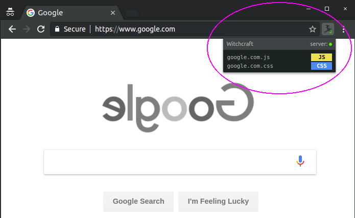

Witch-what?
Think Greasemonkey for more advanced users.
Witchcraft is a Google Chrome extension for loading custom Javascript and CSS directly from a folder in your file system, injecting them into pages that match their files names.
It works by matching the current page domain against script file names available in the scripts folder. For instance, if one navigates to https://www.google.com, Witchcraft will try to load and run google.com.js and google.com.css. For the screenshot above, those are:
Actual practical uses include getting rid of nasty ads, automating clicks and improving page layouts with your own CSS rules. You're only limited to what Javascript and CSS can do.
Witchcraft also looks for scripts on all domain levels. For instance, if one accesses https://gist.github.com, it will try to load any combination of the following files, in this order:
- _global.js
- _global.css
- com.js
- com.css
- github.com.js
- github.com.css
- gist.github.com.js
- gist.github.com.css
_global scripts were added in version 2.3.0. If present, they will load for every web site independently of the host name.
Whenever you edit or create new scripts, there's no need to reload anything other than the page where the scripts are supposed to run. This is what makes Witchcraft special and different from other popular scripting tools, like Greasemonkey or Tampermonkey.
Since Witchcraft runs as a Chrome extension, it is also cross-platform. It has been tested on Windows, MacOS and Linux.